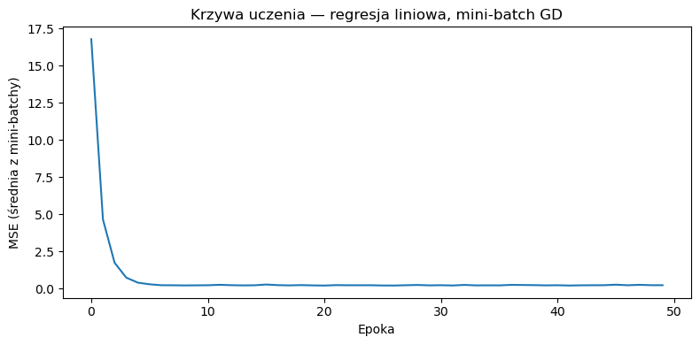

import torch
import numpy as np
import matplotlib.pyplot as plt
from torch.utils.data import TensorDataset, DataLoaderWykład 4: Metoda gradientu prostego. Tensory w PyTorch
Biblioteki Python w analizie danych
Optymalizacja metodą gradientu prostego
Załóżmy, że \(L(\mathbf{w})\) jest funkcją straty dla modelu z parametrami \(\mathbf{w}\). Funkcja \(L\) zwraca nieujemną wartość reprezentującą stopień w jakim przewidywania modelu różnią się od rzeczywistych wartości. Typowe przykłady to:
Błąd średniokwadratowy (MSE) dla problemów regresji:
\[\begin{equation*} L(\mathbf{w}) = \frac{1}{N} \sum_{i=1}^N (y_i - f(\mathbf{x}_i, \mathbf{w}))^2 \end{equation*}\]
gdzie \(y_i\) to rzeczywista wartość, a \(f(\mathbf{x}_i, \mathbf{w})\) to przewidywana wartość przez model dla danych wejściowych \(\mathbf{x}_i\).
Entropia krzyżowa (cross-entropy) dla problemów klasyfikacji binarnej:
\[\begin{equation*} L(\mathbf{w}) = -\frac{1}{N} \sum_{i=1}^N \left( y_i \log(f(\mathbf{x}_i, \mathbf{w})) + (1 - y_i) \log(1 - f(\mathbf{x}_i, \mathbf{w})) \right) \end{equation*}\]
gdzie \(y_i\) to etykieta klasy (0 lub 1), a \(f(\mathbf{x}_i, \mathbf{w})\) to przewidywane prawdopodobieństwo przynależności do klasy 1.
Entropia krzyżowa (cross-entropy) dla problemów klasyfikacji wieloklasowej:
\[\begin{equation*} L(\mathbf{w}) = -\frac{1}{N} \sum_{i=1}^N \sum_{j=1}^K y_{ij} \log(f_j(\mathbf{x}_i, \mathbf{w})) \end{equation*}\]
gdzie \(y_{ij}\) to etykieta klasy (1 jeśli próbka \(i\) należy do klasy \(j\), 0 w przeciwnym razie), a \(f_j(\mathbf{x}_i, \mathbf{w})\) to przewidywane prawdopodobieństwo przynależności do klasy \(j\).
Trening modelu polega na minimalizacji funkcji straty \(L(\mathbf{w})\) względem parametrów \(\mathbf{w}\). Metoda wykorzystywana do znalezienia minimum lokalnego funkcji \(L(\mathbf{w})\) zależy przede wszystkim od tego, czy funkcja \(L\) jest różniczkowalna względem \(\mathbf{w}\), czy też nie:
- Jeśli \(L(\mathbf{w})\) jest różniczkowalna, to zwykle korzysta się z jakiegoś wariantu metody gradientu prostego (o czym opowiemy za chwilę).
- Jeśli \(L(\mathbf{w})\) nie jest różniczkowalna, lub informacja o gradientach nie jest dostępna, to stosuje się metody takie jak algorytmy ewolucyjne, optymalizację bayesowską, symulowane wyżarzanie, i wiele innych.
Optymalizacja metodą gradientu prostego jest algorytmem iteracyjnym. Polega on na tym, że w pierwszym kroku wybieramy jakąś wartość początkową dla parametrów \(\mathbf{w}^{(0)}\) (np. losowo), a następnie w każdym kroku \(\tau\) aktualizujemy parametry \(\mathbf{w}^{(\tau)}\) zgodnie z równaniem:
\[\begin{equation*} \mathbf{w}^{(\tau)} = \mathbf{w}^{(\tau - 1)} + \left(\text{krok zależny od }\mathbf{w}^{(\tau - 1)}\right) \end{equation*}\]
Wybór kroku zależnego od \(\mathbf{w}^{(\tau - 1)}\) jest kluczowy dla działania algorytmu i właśnie w tym miejscu wykorzystuje się informację o gradiencie funkcji \(L(\mathbf{w})\) w punkcie \(\mathbf{w}^{(\tau - 1)}\).
Batch gradient descent
Termin batch oznacza, że funkcję straty \(L(\mathbf{w})\) będziemy obliczali na podstawie całego zbioru danych. Matematycznie batch gradient descent definiuje ciąg \(\mathbf{w}^{(\tau)}\) wzorem indukcyjnym:
\[\begin{equation*} \begin{aligned} \mathbf{w}^{(0)} &= \text{losowo ustalona początkowa wartość parametrów modelu} \\ \mathbf{w}^{(\tau)} &= \mathbf{w}^{(\tau - 1)} - \eta \nabla_{\mathbf{w}} L(\mathbf{w}^{(\tau - 1)}),\quad \tau = 1, 2, \ldots \end{aligned} \end{equation*}\]
gdzie współczynnik uczenia (learning rate) \(\eta>0\) jest hiperparametrem algorytmu.
Algorytm Batch gradient descent
Wejście:
- zbiór danych \(\mathcal{D} = \{(\mathbf{x}_n, y_n)\}_{n=1}^N\),
- funkcja straty \(L(\mathbf{w})\) obliczana na podstawie całego zbioru danych \(\mathcal{D}\)
- współczynnik uczenia \(\eta>0\),
- losowo inicjalizowana początkowa wartość parametrów modelu \(\mathbf{w}\).
Wyjście:
- parametry modelu \(\mathbf{w}\) po zakończeniu treningu.
- Powtarzaj:
- \(\mathbf{w} \gets \mathbf{w} - \eta \nabla_{\mathbf{w}} L(\mathbf{w})\).
- aż do osiągnięcia zbieżności.
- Zwróć \(\mathbf{w}\).
Stochastic gradient descent (SGD)
Funkcja straty \(L(\mathbf{w})\) często daje się zapisać jako suma strat dla poszczególnych próbek:
\[\begin{equation*} L(\mathbf{w}) = \frac{1}{N} \sum_{n=1}^N L_n(\mathbf{w}), \end{equation*}\]
gdzie \(L_n(\mathbf{w})\) to strata dla próbki \(n\). Przykładowo, dla problemu regresji z funkcją straty MSE mamy:
\[\begin{equation*} L(\mathbf{w}) = \frac{1}{N} \sum_{n=1}^N (y_n - f(\mathbf{x}_n, \mathbf{w}))^2 = \frac{1}{N} \sum_{n=1}^N L_n(\mathbf{w}), \end{equation*}\]
gdzie \(L_n(\mathbf{w}) = (y_n - f(\mathbf{x}_n, \mathbf{w}))^2\). Podobnie dla entropii krzyżowej mamy:
\[\begin{equation*} L(\mathbf{w}) = -\frac{1}{N} \sum_{n=1}^N\sum_{j=1}^K y_{nj} \log(f_j(\mathbf{x}_n, \mathbf{w})) = \frac{1}{N} \sum_{n=1}^N L_n(\mathbf{w}), \end{equation*}\]
gdzie \(L_n(\mathbf{w}) = -\sum_{j=1}^K y_{nj} \log(f_j(\mathbf{x}_n, \mathbf{w}))\).
Jeśli \(L(\mathbf{w})\) można zapisać jak wyżej, to gradient \(\nabla_{\mathbf{w}} L(\mathbf{w})\) jest równy średniej z gradientów \(L_n(\mathbf{w})\):
\[\begin{equation*} \nabla_{\mathbf{w}} L(\mathbf{w}) = \frac{1}{N} \sum_{n=1}^N \nabla_{\mathbf{w}} L_n(\mathbf{w}). \end{equation*}\]
Obserwacja ta jest wykorzystywana w algorytmie stochastic gradient descent (SGD), który polega na tym, że w każdym kroku aktualizujemy parametry \(\mathbf{w}^{(\tau)}\) wykorzystując gradient tylko dla jednej próbki \(n\) zamiast dla całego zbioru jak w przypadku batch gradient descent. Matematycznie SGD definiuje ciąg \(\mathbf{w}^{(\tau)}\) wzorem indukcyjnym:
\[\begin{equation*} \begin{aligned} \mathbf{w}^{(0)} &= \text{losowo ustalona początkowa wartość parametrów modelu} \\ \mathbf{w}^{(\tau)} &= \mathbf{w}^{(\tau - 1)} - \eta \nabla_{\mathbf{w}} L_n(\mathbf{w}^{(\tau - 1)}),\quad \tau = 1, 2, \ldots \end{aligned} \end{equation*}\] gdzie \(n\) jest numerem próbki zależnym od kroku \(\tau\).
Algorytm Stochastic gradient descent (SGD)
Input:
- zbiór danych \(\mathcal{D} = \{(\mathbf{x}_n, y_n)\}_{n=1}^N\),
- funkcja straty \(L_n(\mathbf{w})\) obliczana na podstawie próbki \(n\),
- współczynnik uczenia \(\eta>0\),
- losowo inicjalizowana początkowa wartość parametrów modelu \(\mathbf{w}\).
Output:
- parametry modelu \(\mathbf{w}\) po zakończeniu treningu.
Algorytm:
- \(n \gets 1\).
- Powtarzaj:
- \(\mathbf{w} \gets \mathbf{w} - \eta \nabla_{\mathbf{w}} L_n(\mathbf{w})\)
- \(n \gets n + 1\)
- jeśli \(n > N\), to:
- wymieszaj dane \(\mathcal{D}\),
- \(n \gets 1\).
- aż do osiągnięcia zbieżności.
- Zwróć \(\mathbf{w}\).
Algorytm ten w ciągu \(N\) kroków pętli wykona \(N\) aktualizacji parametrów \(\mathbf{w}\) przepuszczając przez model wszystkie próbki. Korzysta się z następującej terminologii:
- iteracja (iteration) — pojedyncza aktualizacja parametrów \(\mathbf{w}\), czyli przetworzenie jednej próbki,
- epoka (epoch) — pełne przejście przez cały zbiór danych, czyli \(N\) iteracji.
Mini-batch gradient descent
Mini-batch gradient descent jest kompromisem pomiędzy batch gradient descent a SGD: aktualizacja parametrów \(\mathbf{w}^{(\tau)}\) odbywa się na podstawie gradientu funkcji straty \(L(\mathbf{w})\) obliczonego na podstawie mini-batcha próbek - podzbioru większego niż jedna próbka, ale mniejszego (zwykle znacznie) niż cały zbiór.
Niech \(B\) będzie liczbą próbek w mini-batchu. Jest to, podobnie jak \(\eta\), hiperparametr algorytmu. Formalnie \(B\) jest dowolną liczbą między 1 a \(N\), w praktyce jest zazwyczaj ustalane jako jakaś potęga 2. Możemy teraz dokonać uogólnienia wzoru z paragrafu o SGD:
\[\begin{equation*} \begin{split} L(\mathbf{w}) &= \frac{1}{N} \sum_{n=1}^N L_n(\mathbf{w}) = \frac{B}{N} \sum_{k=1}^{N/B} \frac{1}{B} \sum_{j=1}^B L_{(k-1)B + j}(\mathbf{w})\\ &= \frac{B}{N} \sum_{k=1}^{N/B} L_{(k-1)B + 1, (k-1)B + 2, \ldots, kB}(\mathbf{w}), \end{split} \end{equation*}\]
gdzie \(L_{(k-1)B + 1, (k-1)B + 2, \ldots, kB}(\mathbf{w})\) to strata dla próbek z mini-batcha o numerach od \((k-1)B + 1\) do \(kB\). W każdym kroku aktualizujemy parametry \(\mathbf{w}^{(\tau)}\) wykorzystując gradient obliczony na batchu \(B\) próbek.
Matematycznie:
\[\begin{equation*} \begin{aligned} \mathbf{w}^{(0)} &= \text{losowo ustalona początkowa wartość parametrów modelu} \\ \mathbf{w}^{(\tau)} &= \mathbf{w}^{(\tau - 1)} - \eta \nabla_{\mathbf{w}} L_{n_1, n_2, \ldots, n_B}(\mathbf{w}^{(\tau - 1)}),\quad \tau = 1, 2, \ldots \end{aligned} \end{equation*}\]
gdzie \(n_1, n_2, \ldots, n_B\) to numery próbek w mini-batchu zależne od kroku \(\tau\).
Algorytm Mini-batch gradient descent
Input:
- zbiór danych \(\mathcal{D} = \{(\mathbf{x}_n, y_n)\}_{n=1}^N\),
- funkcja straty \(L_{n:n+B}(\mathbf{w})\) obliczana na podstawie próbek \(n:n+B\),
- współczynnik uczenia \(\eta>0\),
- rozmiar mini-batcha \(B\),
- losowo inicjalizowana początkowa wartość parametrów modelu \(\mathbf{w}\).
Output:
- parametry modelu \(\mathbf{w}\) po zakończeniu treningu.
Algorytm:
- \(n \gets 1\).
- Powtarzaj:
- \(\mathbf{w} \gets \mathbf{w} - \eta \nabla_{\mathbf{w}} L_{n:n+B}(\mathbf{w})\)
- \(n \gets n + B\)
- jeśli \(n > N\), to:
- wymieszaj dane \(\mathcal{D}\),
- \(n \gets 1\).
- aż do osiągnięcia zbieżności.
- Zwróć \(\mathbf{w}\).
W tym algorytmie iteracja to przetworzenie mini-batcha \(B\) próbek, a epoka to, tak jak poprzednio, pełne przejście przez cały zbiór danych, czyli \(N/B\) iteracji.
Wyżej założyliśmy dla uproszczenia, że \(N\) jest podzielne przez \(B\). Jeśli tak nie jest, to w ostatniej iteracji po prostu przetwarzamy wszystkie pozostałe próbki, które nie zmieściły się w pełnych mini-batchach.
Tensory w PyTorch
Na wykładzie 1 poznaliśmy tablice NumPy (np.ndarray) — wielowymiarowe tablice liczb, na których można wykonywać zwektoryzowane operacje. Tensor w PyTorch (torch.Tensor) to ten sam pomysł — wielowymiarowa tablica wartości numerycznych — ale z dodatkową infrastrukturą zaprojektowaną pod trening modeli uczenia maszynowego. Na tym wykładzie interesuje nas przede wszystkim to, że tensory pozwalają nam pisać kod w stylu bardzo zbliżonym do NumPy, a jednocześnie korzystać z narzędzi PyTorch takich jak DataLoader. Na kolejnym wykładzie zobaczymy drugą kluczową cechę tensorów: mechanizm różniczkowania automatycznego, który pozwala PyTorchowi samodzielnie obliczać gradienty.
Tworzenie tensorów
Tworzenie tensorów wygląda znajomo:
import torch
# Z listy Pythona
a = torch.tensor([1.0, 2.0, 3.0])
# Odpowiedniki np.zeros, np.ones, np.rand
z = torch.zeros(3, 4)
o = torch.ones(2, 3)
r = torch.rand(2, 3) # U(0,1)
rn = torch.randn(2, 3) # N(0,1)
# Z tablicy NumPy
import numpy as np
arr = np.array([1.0, 2.0, 3.0])
t = torch.from_numpy(arr) # współdzieli pamięć z arr!
t2 = torch.tensor(arr) # kopiaTypy danych
Domyślny typ zmiennoprzecinkowy to torch.float32 (w NumPy: np.float64). Jest to różnica, do której warto się przyzwyczaić — modele uczenia maszynowego zwykle pracują w pojedynczej precyzji.
x = torch.tensor([1, 2, 3]) # torch.int64
y = torch.tensor([1.0, 2.0, 3.0]) # torch.float32
z = torch.tensor([1.0, 2.0], dtype=torch.float64) # jawnie float64NumPy a PyTorch — podręczna ściągawka
| Operacja | NumPy | PyTorch |
|---|---|---|
| Tworzenie z listy | np.array([1,2,3]) |
torch.tensor([1,2,3]) |
| Zera / jedynki | np.zeros((2,3)) |
torch.zeros(2,3) |
| Kształt | a.shape |
t.shape (lub t.size()) |
| Zmiana kształtu | a.reshape(2,3) |
t.reshape(2,3) (lub t.view(2,3)) |
| Transpozycja | a.T |
t.T (lub t.t() dla 2D) |
| Łączenie | np.concatenate |
torch.cat |
| Mnożenie macierzowe | a @ b |
t @ u (lub torch.matmul) |
| Suma po osi | a.sum(axis=0) |
t.sum(dim=0) |
Warto zapamiętać dwie różnice terminologiczne: w PyTorch oś nazywa się dim (nie axis), a zmiana kształtu bez kopiowania danych to view (nie ma odpowiednika w NumPy — reshape w NumPy może zwrócić widok, ale nie gwarantuje tego).
Konwersja między NumPy i PyTorch
# NumPy → PyTorch
t = torch.from_numpy(arr) # widok — współdzieli pamięć
t = torch.tensor(arr) # kopia
# PyTorch → NumPy
arr = t.numpy() # widok (tylko dla tensorów na CPU)torch.from_numpy tworzy widok na te same dane, więc zmiana w jednym obiekcie zmieni drugi. Jeśli potrzebujemy niezależnej kopii, używamy torch.tensor(arr).
TensorDataset i DataLoader
W pseudokodzie mini-batch gradient descent ręcznie dzieliliśmy dane na batche i w każdej epoce na nowo je mieszaliśmy. PyTorch automatyzuje ten wzorzec za pomocą dwóch klas:
TensorDataset— owija tensory danych (cechy i etykiety) w obiekt, z którego można pobierać próbki po indeksie.DataLoader— przyjmujeTensorDataset(lub inny zbiór) i tworzy iterator, który w każdej epoce dzieli dane na mini-batche, opcjonalnie je mieszając.
from torch.utils.data import TensorDataset, DataLoader
# Przykładowe dane: 100 próbek, 3 cechy
X = torch.randn(100, 3)
y = torch.randn(100, 1)
dataset = TensorDataset(X, y)
loader = DataLoader(dataset, batch_size=16, shuffle=True)Iteracja po loader w naturalny sposób realizuje schemat znany z pseudokodu:
for epoch in range(num_epochs):
for X_batch, y_batch in loader: # mini-batche
# X_batch.shape == (16, 3) — dla pełnych batchy
# y_batch.shape == (16, 1)
...DataLoader automatycznie zajmuje się:
- podziałem danych na mini-batche o zadanym rozmiarze,
- losowym mieszaniem kolejności próbek na początku każdej epoki (gdy
shuffle=True), - obsługą ostatniego, niepełnego mini-batcha (domyślnie jest on krótszy; parametr
drop_last=Truepozwala go pominąć).
Przykład: regresja liniowa metodą mini-batch gradient descent
Połączmy wszystkie elementy wykładu: zdefiniujemy model regresji liniowej, wyprowadzimy analitycznie gradient funkcji straty MSE, a następnie zaimplementujemy pętlę treningową z użyciem tensorów PyTorch i DataLoader.
Model
Rozważamy model liniowy z wyrazem wolnym:
\[\begin{equation*} f(\mathbf{x}, \mathbf{w}) = w_0 + w_1 x_1 + \ldots + w_d x_d = \mathbf{x}^T \mathbf{w}, \end{equation*}\]
gdzie stosujemy konwencję, że \(x_0 = 1\) (kolumna jedynek dołączona do danych), więc \(\mathbf{w} = (w_0, w_1, \ldots, w_d)^T\).
Funkcja straty
Funkcja straty MSE dla całego zbioru \(N\) próbek:
\[\begin{equation*} L(\mathbf{w}) = \frac{1}{N} \|\mathbf{y} - X\mathbf{w}\|^2 = \frac{1}{N} (\mathbf{y} - X\mathbf{w})^T (\mathbf{y} - X\mathbf{w}), \end{equation*}\]
gdzie \(X \in \mathbb{R}^{N \times (d+1)}\) to macierz danych (z kolumną jedynek), a \(\mathbf{y} \in \mathbb{R}^N\) to wektor etykiet.
Gradient — wyprowadzenie
Obliczmy gradient \(\nabla_{\mathbf{w}} L(\mathbf{w})\). Zaczniemy od rozwinięcia kwadratu normy. Niech \(\mathbf{r} = \mathbf{y} - X\mathbf{w}\) będzie wektorem reszt (residuals). Wtedy:
\[\begin{equation*} L(\mathbf{w}) = \frac{1}{N} \mathbf{r}^T \mathbf{r} = \frac{1}{N} (\mathbf{y} - X\mathbf{w})^T (\mathbf{y} - X\mathbf{w}). \end{equation*}\]
Rozwijając iloczyn:
\[\begin{equation*} L(\mathbf{w}) = \frac{1}{N} \left( \mathbf{y}^T\mathbf{y} - 2\mathbf{y}^T X\mathbf{w} + \mathbf{w}^T X^T X \mathbf{w} \right). \end{equation*}\]
Różniczkując po \(\mathbf{w}\):
\[\begin{equation*} \nabla_{\mathbf{w}} L(\mathbf{w}) = \frac{1}{N} \left( -2 X^T \mathbf{y} + 2 X^T X \mathbf{w} \right) = -\frac{2}{N} X^T (\mathbf{y} - X\mathbf{w}). \end{equation*}\]
Dla mini-batcha \(B\) próbek o indeksach \(\{n_1, \ldots, n_B\}\) wzór przyjmuje identyczną postać, ale z podmacierzami \(X_B\) i \(\mathbf{y}_B\):
\[\begin{equation*} \nabla_{\mathbf{w}} L_B(\mathbf{w}) = -\frac{2}{B} X_B^T (\mathbf{y}_B - X_B \mathbf{w}). \end{equation*}\]
Implementacja
Wygenerujmy dane syntetyczne. Prawdziwa zależność to \(y = 3 + 2x_1 - x_2 + \varepsilon\):
torch.manual_seed(42)
N = 200
d = 2
X_raw = torch.randn(N, d)
w_true = torch.tensor([3.0, 2.0, -1.0]) # w0=3, w1=2, w2=-1
# Dołączamy kolumnę jedynek (wyraz wolny)
X = torch.cat([torch.ones(N, 1), X_raw], dim=1) # (N, d+1)
y = X @ w_true + 0.5 * torch.randn(N) # (N,)Przygotujmy DataLoader:
dataset = TensorDataset(X, y)
batch_size = 32
loader = DataLoader(dataset, batch_size=batch_size, shuffle=True)Inicjalizujemy wagi losowo i uruchamiamy pętlę treningową:
w = torch.randn(d + 1) # losowa inicjalizacja
eta = 0.05 # learning rate
num_epochs = 10
history = []
for epoch in range(num_epochs):
epoch_loss = 0.0
num_batches = 0
for X_batch, y_batch in loader:
# Predykcja
y_pred = X_batch @ w
# Strata MSE na mini-batchu
residuals = y_batch - y_pred
loss = (residuals ** 2).mean()
# Gradient — wzór analityczny
grad = -2.0 / X_batch.shape[0] * (X_batch.T @ residuals)
# Aktualizacja parametrów
w = w - eta * grad
epoch_loss += loss.item()
num_batches += 1
avg_loss = epoch_loss / num_batches
history.append(avg_loss)
if (epoch + 1) % 10 == 0:
print(f"Epoka {epoch+1:3d}/{num_epochs}, MSE: {avg_loss:.4f}")Epoka 10/10, MSE: 0.2204Wyniki
Porównajmy wyuczone wagi z prawdziwymi:
print(f"Prawdziwe wagi: {w_true.tolist()}")
print(f"Wyuczone wagi: {[round(wi, 4) for wi in w.tolist()]}")Prawdziwe wagi: [3.0, 2.0, -1.0]
Wyuczone wagi: [2.9771, 1.9661, -0.953]Wizualizacja spadku funkcji straty:
fig, ax = plt.subplots(figsize=(8, 4))
ax.plot(history, marker="o")
ax.set_xlabel("Epoka")
ax.set_ylabel("MSE (średnia z mini-batchy)")
ax.set_title("Krzywa uczenia — regresja liniowa, mini-batch GD");
Dyskusja
Zwróćmy uwagę na kilka elementów tego przykładu.
Ręczne obliczanie gradientu — musieliśmy sami wyprowadzić wzór na \(\nabla_{\mathbf{w}} L\) i zaprogramować go w linijce grad = -2.0 / X_batch.shape[0] * (X_batch.T @ residuals). Dla regresji liniowej z MSE wzór jest prosty, ale dla bardziej złożonych modeli (sieci neuronowe, funkcje nieliniowe) wyprowadzanie gradientów ręcznie staje się niepraktyczne lub wręcz niemożliwe. Na następnym wykładzie poznamy mechanizm różniczkowania automatycznego (autograd) wbudowany w PyTorch, który zdejmie z nas ten obowiązek.
Rola DataLoader — bez niego musielibyśmy ręcznie implementować mieszanie danych i podział na batche, co jest dokładnie tym, co opisywaliśmy w pseudokodzie. DataLoader realizuje ten wzorzec automatycznie.
Brak konwergencji do zera — funkcja straty nie spada do zera, ponieważ dane zawierają szum (\(\varepsilon\)). Jest to zachowanie prawidłowe: model prawidłowo odzyskuje trend, ale nie może dopasować się do losowego szumu.